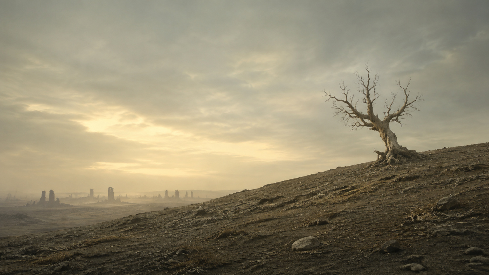

FOR THOSE STILL INSIDE
They are watching.
Wipe the lens.Let them see the world outside.
ONE CLOTH. THIRTY SECONDS.
TRANSMISSION RESTORED
For a moment, the world is clear.
TAKE A BREATH
A small scene inspired by Silo.